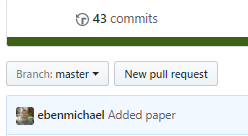

Lab 3¶
SCF Accounts¶
We have SCF (Statistical Computing Facility) accounts set up for this course. To set up the accounts, we need to ssh into the cluster. Say your account name is s159-X, then you need to run one of
ssh s159-X@gandalf.berkeley.edu
or
ssh s159-X@arwen.berkeley.edu
or
ssh s159-X@legolas.berkeley.edu
and complete the initial setup.
First Homework¶
The first homework is a "warm up" for the first project. You'll be working in pairs to reproduce the figures in this paper. Working in pairs gives a feel for collaboration. How can we work together effectively?
- Start by selecting a work partner for this homework. This person will also be your work partner for the first project (but not the others).
- Select and write down the name of the team you will work as. The name of the team should be made from the first three letters of your Github usernames, in all lowercase. For example if your Github username is
Aliceand your partner's isbobby, your team name should beali-bob. - When each of you visits the link from Piazza, after you accept your name from the initial list, you will create your team with the appropriate team name (
ali-bobin this case, make sure to use your actual team name!):

Once you have accepted the assignment, you'll see a repository created for your team that you can both access. You should then clone that repository on your laptop and begin working, as indicated below.
You may find it useful to watch this brief video with an introduction to how assignments work:
Working Together¶
Working on a separate branch¶
Each pair will share a single repository, and it can get messy fast. A good way to avoid mistakes and merge errors is to create a separate branch for your work
git checkout -b my-awesome-work
After adding changes that you're happy with, you should push the branch to the shared repo
git push origin my-awesome-work
Creating the pull request¶
Once the branch is pushed, you can merge it into master with a pull request. Go to the repo on Github and click on the "New pull request" button

You'll see a drop down menu for "base" and "compare" or "head". The "base" drop down menu chooses the branch you want to merge on to.

The "compare" or "head" drop down menu chooses the branch you want to merge

Now you can create the pull request and add general comments, comments on files, and comments on lines. If there isn't a merge error, Github will let you merge the branch.
Working on the Homework¶
Use the rest of the lab time to work with your partner.